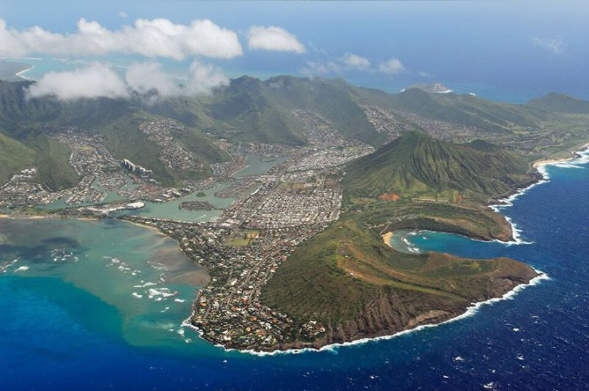

Hawaiʻi Kai
Place: Hawaiʻi Kai, East Honolulu, Oʻahu
Type: Modern community / marina development / former fishpond landscape
Story it tells: A modern waterfront community whose name overlays the older Maunalua landscape and the former Kuapā fishpond.

Hawaiʻi Kai is a modern place name created during the large-scale development of East Honolulu in the 1960s. The name combines Hawaiʻi and kai, meaning sea, reflecting the waterfront canals, marinas, and residential neighborhoods that came to define the area. Before this development, the region was more broadly known as Maunalua, often interpreted as “two mountains,” referring to the volcanic landmarks of Koko Head and Koko Crater that frame the landscape.
The modern community was developed by industrialist Henry J. Kaiser after a long-term lease agreement with Bishop Estate. Beginning in the late 1950s and early 1960s, the shallow coastal inlet and wetlands of Kuapā Pond were dredged, filled, and reshaped into a planned marina community. What had once been one of Oʻahu’s largest Hawaiian fishponds became a network of canals, islands, house lots, shopping areas, and waterfront residences.
Kuapā Pond had long been part of the Maunalua landscape. The word kuapā refers to a fishpond wall, and the area was associated with aquaculture, fishing, agriculture, wetlands, and Native Hawaiian use before modern development transformed the shoreline. The former fishpond was especially important for raising fish such as ʻawaʻawa, while nearby lands and valleys supported farming, specifically pig farms, and settlement.
Hawaiʻi Kai quickly became one of Oʻahu’s most recognizable suburban communities. Early critics considered the new community too far from Honolulu, but the area later became highly desirable because of its marina setting and proximity to places such as Hanauma Bay, Koko Head, Sandy Beach, and the windward side of Oʻahu.
Today, Hawaiʻi Kai reflects a major shift in how this part of East Honolulu has been named and understood. Its modern name points to sea-oriented residential design, while Maunalua and Kuapā preserve older layers of Hawaiian geography, aquaculture, and land use beneath the marina landscape.